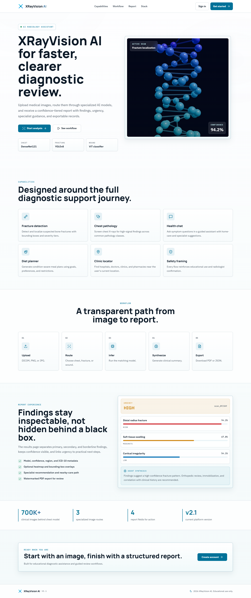
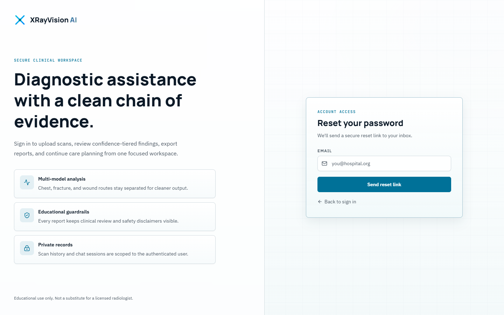

User Manual
XRayVision AI — Getting Started and Complete Feature Guide
| Field | Value |
|---|---|
| Document | User Manual |
| Version | 1.0 |
| Product version | 2.1.0 |
| Live application | https://x-ray-vision-board.vercel.app |
| Companion documents | SRS · SDD · Test Cases |
| Institution | Minhaj University Lahore — School of Software Engineering |
| Students | Muhammad Ali Raza (2022F-MUL-BSSWE-017), Hamza Afzal (2022F-MUL-BSSWE-027) |
| Supervisor | Maam Misbah — Lecturer, School of Software Engineering |
⚠️ Important Medical Disclaimer — read this first
XRayVision AI is an educational tool. It is NOT a certified medical device.
- Every result is an AI-generated estimate produced to support, never to replace, the clinical judgement of a qualified radiologist or physician.
- Do not use this software to make a diagnosis, to start or stop treatment, or to decide whether to seek care.
- The chatbot and the diet planner give general health information only. They are not a consultation.
- If you have a medical emergency, contact emergency services immediately — do not use this application.
An EDUCATIONAL USE ONLY badge is displayed permanently in the sidebar of every page, and a fuller disclaimer appears at the foot of every diagnostic report.
Table of Contents
- What XRayVision AI Does
- Before You Begin
- Creating an Account and Signing In
- Finding Your Way Around
- The Dashboard
- Running an Analysis
- Reading Your Diagnostic Report
- Scan History and Exports
- The Health Chatbot
- The Diet Planner
- Finding Nearby Clinics
- Your Profile
- Settings
- Using XRayVision AI on a Phone
- Troubleshooting
- Frequently Asked Questions
- Glossary
1. What XRayVision AI Does
XRayVision AI takes a medical image you upload and returns a structured diagnostic report in seconds. Behind the scenes, four AI models work together — think of them as a team of four specialists:
| Specialist | Model | What it does |
|---|---|---|
| 🫁 Chest specialist | DenseNet121 | Screens chest X-rays for 18 pathologies, trained on 700,000+ clinical images |
| 🦴 Orthopaedic specialist | YOLOv8 | Draws boxes around suspected fractures on bone X-rays |
| 🩹 Wound care specialist | ViT | Classifies photographs of external wounds |
| 🤖 Senior consultant | GLM 4.5 Air | Reads all their findings and writes one clear clinical summary with next steps |
You choose which specialist to consult by selecting an analysis route. The system does not run every model on every image — sending a chest model a photograph of a wound would only produce noise.

The public landing page at https://x-ray-vision-board.vercel.app
2. Before You Begin
2.1 What you need
| Requirement | Detail |
|---|---|
| Browser | Chrome, Edge, Firefox or Safari — a recent version |
| Internet | A stable connection. Images can be up to 20 MB. |
| An account | Free — see Section 3 |
| Location permission | Only for the Clinic Locator. Optional. |
| Microphone permission | Only for chatbot voice input. Optional. |
2.2 What images the system accepts
| Property | Requirement |
|---|---|
| Formats | DICOM (.dcm), PNG, JPG |
| File size | Between 100 KB and 20 MB |
| Resolution | At least 200 × 200 pixels |
| Recommended | Clear, well-lit, non-blurry, at least 512 × 512 px for best accuracy |
Why the minimum size? Very small or low-resolution images simply do not contain enough pixel detail for reliable inference. The system rejects them rather than returning an unreliable result.
3. Creating an Account and Signing In
3.1 Creating a new account

- Go to https://x-ray-vision-board.vercel.app.
- Click Get started (top right) — or open
/auth/registerdirectly. - Fill in:
- Full name — shown in the header and on your PDF reports
- Email — your sign-in identifier
- Password — must be at least 8 characters
- Confirm password — must match exactly
- Click Create account.
You are signed in automatically and taken straight to your Dashboard.
If you see "email already registered" — that address already has an account. Use Sign in instead, or reset your password.
3.2 Signing in

- Open
/auth/loginor click Sign in. - Enter your email and password.
- Click Sign In.
Trying the app without registering. Click Try demo account to sign in instantly to a pre-populated demonstration account. This is the fastest way for a reviewer or evaluator to explore every feature with real data already in place.
How long you stay signed in. Your session lasts 24 hours. After that you will be returned to the sign-in page and will need to sign in again. This is a security measure.
3.3 Forgot your password?

- On the sign-in page, click the Forgot password link.
- Enter the email address of your account.
- Click Send reset link.
- Check your inbox — including the spam folder — and follow the link in the email.
4. Finding Your Way Around
Once signed in, every page shares the same layout.
The sidebar (left) — your main navigation:
| Item | What it is for |
|---|---|
| Dashboard | Your statistics and recent activity |
| New Analysis | Upload an image and run the AI |
| Health Chat | Ask health questions in English or Urdu |
| Diet Planner | Generate a personalised 7-day meal plan |
| Clinics | Find hospitals and clinics near you |
| History | Every scan you have ever run |
| Profile | Your name, role and profile picture |
| Settings | Theme and display preferences |
At the top of the sidebar, AI Ensemble — 4 models online shows the models are ready. At the bottom, the EDUCATIONAL USE ONLY badge is always visible. Collapse narrows the sidebar to give the content more room.
The header (top) — shows the current page name, a search box (Ctrl K), a notifications bell, and
your account menu with the sign-out button.
5. The Dashboard
The Dashboard is your home page after signing in.

5.1 The four headline tiles
| Tile | Meaning |
|---|---|
| Total scans | How many analyses you have run, across all image types |
| Urgent reports | How many of your scans came back rated high or critical |
| Avg confidence | The mean confidence score across all findings in your history |
| Report time | The average time your analyses took to complete |
5.2 Recent analyses
The five most recent scans, with scan id, image type, number of findings, urgency badge and date. Click any row to open the full report. View all takes you to the complete History.
5.3 Finding distribution
A ranked bar chart of the labels that appear most often across your scans — useful for spotting patterns in the images you have been studying.
5.4 Average model confidence
How confident each of the three imaging models has been, on average, across your scan history.
These figures are yours alone. Every number on this page is calculated from only your own scans. No other user's data is ever included.
6. Running an Analysis (core feature)
This is the heart of the application. Click New Analysis in the sidebar.

The page guides you through three steps.
Step 1 — Upload your image
Drag your file onto the upload area, or click it to browse your device.
The panel restates the limits: DICOM / PNG / JPG · MIN 200×200 PX · 100 KB – 20 MB.
💡 Image quality matters. Use clear, well-lit, non-blurry images of at least 512 × 512 px for best accuracy. Very small or low-quality images can cause incorrect predictions.
Step 2 — Choose your analysis route
Pick the one route that matches your image. This decides which AI model examines it.
| Route | Model | Use it for |
|---|---|---|
| Chest pathology | DenseNet121 | Chest X-rays — screens for common pathology classes |
| Fracture detection | YOLOv8 | Bone X-rays — localises fractures with bounding boxes |
| External wound | ViT | Photographs of external wounds |
⚠️ Choose carefully. Selecting the wrong route gives a meaningless result. A chest model looking at a wound photograph has nothing useful to say about it.
Step 3 — Add context (optional but recommended)
| Field | Purpose | Example |
|---|---|---|
| Patient / session label | A tag so you can find this scan later in History | PT-4821 |
| Notes for AI agent | Clinical context passed to the AI, which uses it when writing the summary | Pain after fall; swelling near wrist |
Notes genuinely change the output — the AI weighs your clinical context when assessing urgency and recommending next steps.
Running it
Click Analyze image. A full-screen processing overlay appears while the models work — this typically takes 8 to 15 seconds.
First analysis of the day may be slower. The backend runs on a free-tier host that sleeps when idle. The very first request can take 30–60 seconds while the AI models load into memory. Subsequent analyses are fast.
When it finishes you are taken automatically to your report.
7. Reading Your Diagnostic Report

The report has two columns.
7.1 Left column — the image
Your uploaded image is displayed with the AI's findings drawn on top as dashed boxes, each labelled with its finding name and confidence.
The controls beneath the image:
| Control | Effect |
|---|---|
| AI Findings | Show or hide the bounding boxes |
| Heatmap | Show or hide the confidence heatmap overlay |
| Labels | Show or hide the text labels on each box |
| 🔍 + / − | Zoom between 0.5× and 2.5× |
| ↺ | Reset the zoom to normal |
7.2 Right column — the findings
The urgency banner at the top gives the overall assessment, in one of five levels:
| Level | Meaning |
|---|---|
| CRITICAL | Findings suggest an immediately serious condition |
| HIGH | Significant findings requiring prompt professional attention |
| MEDIUM | Findings warranting follow-up |
| LOW | Minor or uncertain findings |
| CLEAR | No significant findings detected |
Each level is shown as both a colour and a word, so the meaning is never ambiguous.
The low-confidence warning. If any finding scored below 60 % confidence, a blue banner appears: "One or more findings have confidence below 60% — radiologist review recommended." Take this seriously — it means the AI itself is uncertain.
Findings, grouped by confidence. This grouping is deliberate — it makes uncertainty visible instead of leaving you to interpret raw percentages:
| Group | Confidence | How it is shown |
|---|---|---|
| Primary Findings | 65 % and above | Full cards with confidence bars — the AI's strongest signals |
| Secondary Findings | 50 % – 65 % | Compact rows, labelled with the confidence range |
| Borderline | Below 50 % | Collapsed behind a "click to expand" control — weak signals, shown for completeness |
Each finding card shows the finding name, confidence percentage, severity, the model that produced it, the anatomical region, and an ICD-10 diagnostic code where one is mapped.
GLM Agent Analysis. The AI's written clinical summary — what the findings suggest, taken together, and what the confidence levels mean in context. It always ends by reminding you that this is educational, not a substitute for a qualified radiologist.
Immediate Actions. A numbered list of practical next steps — consultations, further imaging, management measures, follow-up.
Recommended specialist. Which kind of doctor these findings would normally be referred to, with a Find nearby → link that takes you straight to the Clinic Locator.
Confidence Summary. A complete table of every finding — model, finding, confidence, severity — so nothing is hidden behind the tiered grouping.
7.3 Saving your report
At the bottom of the report:
- Download PDF Report — a formatted document with the image, findings, summary and disclaimer. This is the version to attach to a referral or a case study.
- Export JSON — the raw structured findings, for further analysis or research.
- Back to history — returns to your scan list.
8. Scan History and Exports
Click History in the sidebar to see every analysis you have ever run.

Scans are listed newest first. Each row shows the image thumbnail, scan type, number of findings, urgency badge and date. Hovering a row reveals a View report → link.
What you can do here:
| Action | How |
|---|---|
| Open a report | Click the row |
| Filter by type | Use the scan-type filter to show only chest, fracture or wound scans |
| Download a PDF | Open the report, then click Download PDF Report |
| Export JSON | Open the report, then click Export JSON |
| Delete a scan | Use the delete control on the scan |
⚠️ Deletion is permanent. Deleting a scan removes both the database record and the stored image. There is no undo and no recycle bin. Download the PDF first if you might need it.
9. The Health Chatbot
Click Health Chat for general medical questions in English or Urdu.

9.1 Asking a question
- Choose your language with the EN / اردو toggle at the top.
- Type your question in the box at the bottom — or click the microphone to dictate it.
- Press Enter or click send.
When you select Urdu, the interface switches to right-to-left and the placeholder changes to اپنی علامات بتائیں...
9.2 What you get back
Alongside the written reply, the assistant surfaces two structured cards where relevant:
- Doctor type — the kind of specialist your described symptoms would normally be taken to
- Home remedies — general self-care suggestions
9.3 Conversation memory
The chatbot remembers the last 10 messages in your conversation, so you can ask follow-up questions naturally:
You: I've had a fever for two days. Bot: (replies about fever) You: How long should it last? ← the bot knows you still mean the fever
Your conversations are saved. When you come back to the Health Chat page, previous sessions are listed and can be reopened.
⚠️ What the chatbot will not do. It will never give you a definitive diagnosis, and it will always point you toward a qualified professional for real medical decisions. This is deliberate. If you press it for a yes-or-no answer about a serious condition, it will decline and refer you to a doctor.
10. The Diet Planner
Click Diet Planner to generate a personalised 7-day meal plan.

10.1 Filling in the form
| Field | What to enter | Example |
|---|---|---|
| Medical condition | Any condition the plan should account for | diabetes, high blood pressure |
| Dietary preference | Your general eating style | balanced, vegetarian |
| Restrictions | Allergies and foods to avoid | gluten-free, dairy-free, nut allergy |
| Goals | What you want the plan to achieve | weight loss, muscle gain |
Click generate and the plan appears below.
10.2 Built-in medical safety rules
The planner applies condition-specific clinical guardrails automatically:
| If you enter | The plan applies |
|---|---|
| Hypertension / high blood pressure | DASH dietary principles — reduced sodium, more fruit, vegetables and low-fat dairy |
| Diabetes | Low-glycaemic-index food choices |
| Kidney disease | An explicit recommendation to consult a renal dietitian — kidney nutrition needs individual professional supervision |
10.3 Your plan
Each of the seven days shows Breakfast, Lunch and Dinner — with a name, a description and, where available, calories and key nutrients. Snacks are included where appropriate, along with a summary and general tips.
⚠️ General guidance only. If you have a medical condition, discuss any diet plan with your doctor or a qualified dietitian before following it.
11. Finding Nearby Clinics
Click Clinics to find hospitals, clinics, doctors and pharmacies near you.

- Set your search radius with the slider — anywhere from 1 km to 20 km. It starts at 5 km.
- Click Use My Location.
- Your browser will ask permission to share your location. Click Allow.
Results appear sorted by distance, nearest first. Each shows the facility name, its type, its address, how far away it is, and a link that opens it in Google Maps.
Facility data comes from OpenStreetMap, a community-maintained map database. The page notes: "Data may not reflect all facilities."
If you decline location permission, the page explains what happened and no search is run. You can grant permission in your browser's site settings and try again.
If no results appear, increase the radius with the slider and search again. Coverage varies by region.
12. Your Profile
Click Profile to view and edit your account details.

Here you can:
- Change your display name — this appears in the header and on your PDF reports
- Update your role (for example Medical Student, Radiologist, Researcher) — this is a descriptive label only and does not change what you can access
- Upload a profile picture
Your scan statistics are also summarised on this page.
13. Settings
Click Settings to personalise how the application looks and behaves.

13.1 Appearance
Choose Light, Dark or System (which follows your operating system's setting).
13.2 Analysis preferences
| Setting | Effect |
|---|---|
| Show AI detection boxes on images | Whether bounding boxes are drawn by default on result images |
| Show confidence heatmap overlay | Whether the heatmap layer is shown by default |
13.3 Notifications
| Setting | Effect |
|---|---|
| Email notifications for critical findings | Whether you are emailed when a scan returns a critical result |
Your preferences are saved to your account, so they follow you to any device you sign in from.
14. Using XRayVision AI on a Phone
The application is fully responsive and works on mobile browsers.

On a small screen the layout reflows to a single column and the sidebar becomes a menu. Everything works, though reviewing bounding boxes on a detailed X-ray is naturally easier on a larger screen.
15. Troubleshooting
Upload and analysis
| Message or symptom | What it means | What to do |
|---|---|---|
| "File is too small (40 KB). Minimum is 100 KB…" | The image lacks enough pixel data for reliable inference | Use a higher-quality export of the image |
| "File is too large (24.3 MB). Maximum allowed size is 20 MB." | The file exceeds the upload limit | Compress or resize the image below 20 MB |
| "Image resolution is too low (150×150 px)…" | Below the 200 × 200 px minimum | Use an image of at least 200 × 200 px — 512 × 512 px or larger is recommended |
| "File could not be decoded as a valid image…" | The file is not a readable JPEG, PNG or DICOM | Check the file actually opens in an image viewer; renaming a PDF to .jpg will not work |
| "Empty file uploaded." | The file contains no data | Re-export or re-download the image |
| "Rate limit exceeded. Please slow down." | More than 10 analyses in one minute | Wait a minute and try again |
| Analysis failed screen | The AI models could not process the image | Verify you selected the right route for the image type, then retry. If it persists, the backend may be restarting — wait a minute. |
| "AI synthesis temporarily unavailable. Please review findings manually." | The AI models worked, but the summary-writing service was unreachable | The findings are still valid — read them directly. Re-run later for a written summary. |
| The first analysis takes 30–60 seconds | The free-tier backend was asleep and is loading models | Normal. Subsequent analyses are fast. |
| Results appear but the image is missing | Image storage was unavailable during upload | The findings are still valid. Re-run the analysis if you need the image saved. |
Signing in
| Symptom | What to do |
|---|---|
| Signed out unexpectedly | Sessions last 24 hours. Simply sign in again. |
| "Invalid email or password" | Check for typos and caps lock. If you still cannot get in, use Forgot password. |
| "Demo login failed. Please try again." | The backend may be waking up. Wait 30 seconds and retry. |
| Reset email never arrived | Check your spam folder, and confirm you entered the address the account was registered with. |
Other features
| Symptom | What to do |
|---|---|
| Clinic search finds nothing | Increase the radius. OpenStreetMap coverage varies by region. |
| Clinic search shows an error | The public map service may be busy. Wait a moment and try again. |
| Location permission blocked | Grant location access for this site in your browser's site settings. |
| Microphone does not work in chat | Grant microphone permission, or just type your question instead. |
| Chatbot replies are slow | Replies typically take a few seconds. Longer waits usually mean the AI service is busy. |
| Diet plan looks generic | If the AI's response failed validation, a safe pre-written plan is shown instead. Try again with more specific inputs. |
16. Frequently Asked Questions
Can I use this to diagnose a patient? No. XRayVision AI is an educational tool and is not a certified medical device. Every output is an AI estimate to support learning and preliminary review. Clinical decisions must be made by a qualified professional.
How accurate is it? Accuracy varies by model, by image quality and by the condition being examined. That is precisely why every finding shows a confidence percentage, why findings are grouped into confidence tiers, and why anything below 60 % triggers an explicit recommendation for radiologist review. Treat low-confidence findings as prompts to look more carefully — not as conclusions.
What happens to the images I upload? They are stored in your account so you can review them later, and are only ever shown alongside your own scans. Deleting a scan removes both the record and the image permanently.
Can other users see my scans? No. Every scan, chat conversation and statistic is tied to your account. Ownership is checked in the application and again in the database.
Why do I have to sign in again every day? Sessions expire after 24 hours as a security measure.
Why was my image rejected? Almost always size or resolution — the minimums are 100 KB and 200 × 200 px. The error message always states the specific reason and the limit involved.
Can I upload a DICOM file straight from a scanner?
Yes. DICOM (.dcm) files are supported alongside PNG and JPG.
Which route should I pick? Chest X-ray → Chest pathology. Bone X-ray where you suspect a fracture → Fracture detection. Photograph of a wound on the skin → External wound.
Why did I get no findings at all? No finding met the confidence threshold. The urgency will read CLEAR. This does not prove the image is normal — it means this model found nothing it was confident about.
Is the chatbot a doctor? No. It provides general health information and points you toward the right kind of specialist. It will not diagnose you.
Is it free? Yes. The entire platform runs on free-tier services. That is also why the first request after a period of inactivity can be slow.
17. Glossary
| Term | Plain-English meaning |
|---|---|
| Bounding box | The rectangle the AI draws around a region it thinks is abnormal |
| CLAHE | A contrast-enhancement step applied to your image before analysis, so faint details become easier for the model to see |
| Confidence | How sure the model is, as a percentage. Higher is more certain — but it is never a guarantee. |
| DenseNet121 | The neural network that examines chest X-rays, trained on over 700,000 clinical images |
| DICOM | The standard file format that medical imaging equipment produces (.dcm) |
| Finding | One thing the AI thinks it has spotted, with a name and a confidence score |
| ICD-10 code | The internationally standard code for a diagnosis, e.g. S02-S92 for certain fractures |
| LLM | Large Language Model — the AI that writes the readable clinical summary |
| Severity | How serious a single finding is judged to be: critical, high, moderate or low |
| Synthesis | The AI-written paragraph that pulls all the findings together into one clinical picture |
| Urgency | The overall rating for the whole scan: critical, high, medium, low or clear |
| ViT | Vision Transformer — the neural network that classifies wound photographs |
| YOLOv8 | The object-detection model that finds and boxes fractures on bone X-rays |
Getting Help
| Need | Where to go |
|---|---|
| Technical API reference | /docs on the backend (Swagger UI) |
| What the system is required to do | Software Requirements Specification |
| How the system is built | Software Design Document |
| How it was verified | Test Documentation |
| Reporting a security issue | SECURITY.md |
| Contributing | CONTRIBUTING.md |
Revision History
| Version | Date | Author | Description |
|---|---|---|---|
| 1.0 | August 2026 | Muhammad Ali Raza, Hamza Afzal | Initial user manual with screenshots from the live deployment |
XRayVision AI — User Manual v1.0 — Minhaj University Lahore Educational use only. Not a certified medical device.